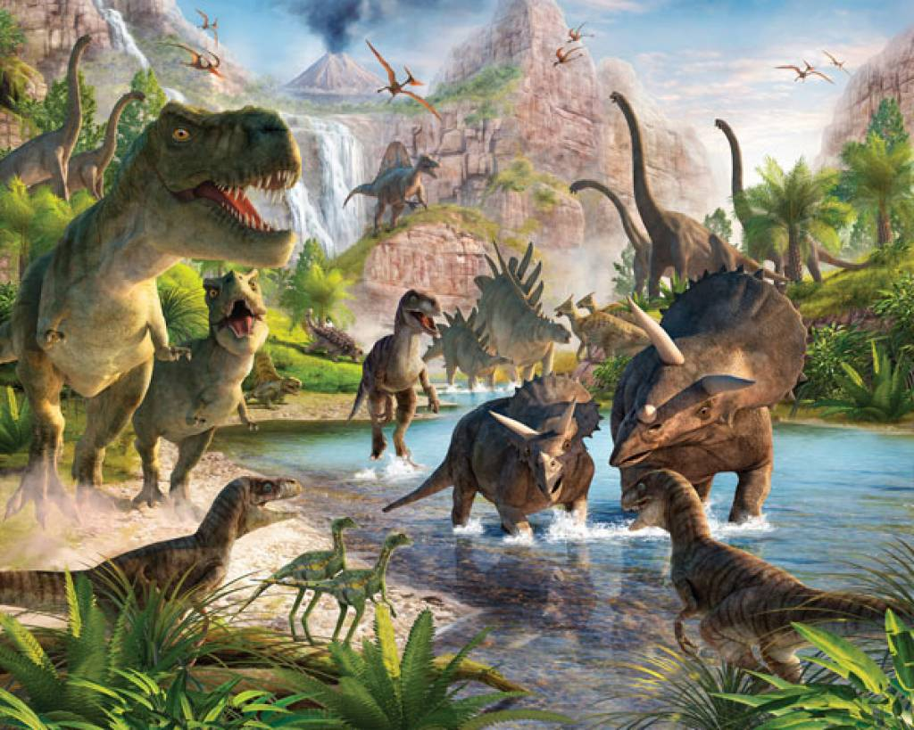

More about Dinosaurs
Dinosaurs are a diverse group of animals of the clade Dinosauria that first appeared during the Triassic period. Although the exact origin and timing of the evolution of dinosaurs is the subject of active research, the current scientific consensus places their origin between 231 and 243 million years ago.They became the dominant terrestrial vertebrates after the Triassic–jurassic extinction event 201 million years ago. Their dominance continued through the Jurassic and Cretaceous periods and ended when the Cretaceous-Paleogene extinction event led to the extinction of most dinosaur groups 66 million years ago.
Until the late 20th century, all groups of dinosaurs were believed to be extinct; however, the fossil record indicates that birds are the modern descendants of feathered dinosaurs, having evolved from theropod ancestors during the Jurassic Period, and are now termed "avian dinosaurs". As such, birds were the only dinosaur lineage to survive the mass extinction event. Throughout the remainder of this article, the term "dinosaur" is sometimes used generically to refer to both the avian and non-avian dinosaurs combined, while at other times it is used to refer to the non-avian dinosaurs specifically, and the avian dinosaurs are sometimes simply referred to as "birds". This article deals primarily with non-avian dinosaurs.
Dinosaurs are a varied group of animals from taxonomic, morphological and ecological standpoints. Birds, at over 10000 living species, are the most diverse group of vertebrates besides perciform fish. Using fossil evidence, paleontologists have identified over 500 distinct genera and more than 1000 different species of non-avian dinosaurs.
Dinosaurs are represented on every continent by both extant species and fossil remains. Some are herbivorous, others carnivorous. While dinosaurs were ancestrally bipedal, many extinct groups included quadrupedal species, and some were able to shift between these stances. Elaborate display structures such as horns or crests are common to all dinosaur groups, and some extinct groups developed skeletal modifications such as bony armor and spines. Evidence suggests that egg laying and nest building are additional traits shared by all dinosaurs.
Tallest and Heaviest
The tallest and heaviest dinosaur known from good skeletons is Giraffatitan brancai (previously classified as a species of Brachiosaurus). Its remains were discovered in Tanzania between 1907 and 1912. Bones from several similar-sized individuals were incorporated into the skeleton now mounted and on display at the Museum für Naturkunde Berlin; this mount is 12 meters (39 ft) tall and 21.8–22.5 meters (72–74 ft) long, and would have belonged to an animal that weighed between 30000 and 60000 kilograms (70000 and 130000 lb). The longest complete dinosaur is the 27 meters (89 feet) long Diplodocus, which was discovered in Wyoming in the United States and displayed in Pittsburgh's Carnegie Natural History Museum in 1907.
click here to go back to previous page